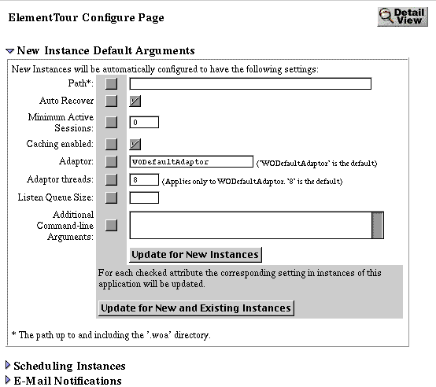

Table of Contents
Table of Contents  Next Section
Table of Contents
Next Section
Table of Contents  Previous Section
Previous Section
When an application's request load varies by period (that is, it experiences "spikes"), you can increase the listen queue depth to improve performance. For example, suppose an application can process one transaction per second and it typically receives transactions at the rate of one transaction every two seconds. The application's listen queue remains empty because it can handle the load. Suppose that at certain times of the day, this same application receives a much heavier load of two requests per second. At these times, the listen queue fills up because the application cannot process as many requests as it receives. If you know that the request rate will eventually return to the normal load of one request every two seconds, increasing the listen queue depth will help improve performance during the heavy load time.
On the other hand, suppose that two requests per second becomes the normal request load for this application. In this case, no matter how big the listen queue, the application can never catch up because it only processes one request per second. In this situation, when the average load is higher than the application can handle, load balancing is the proper solution.
To set the listen queue depth for all instances of an application, do the following in Monitor:

Table of Contents Next Section